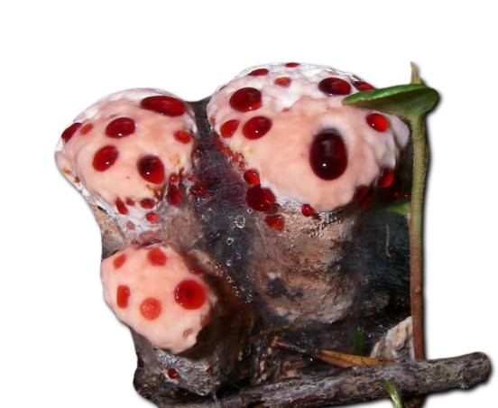
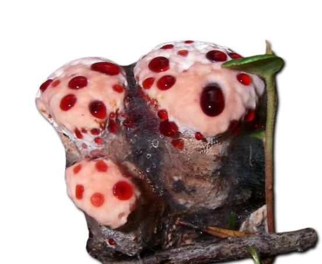

Descripción morfológica
Hydnellum peckii, conocido como "hongo diente sangrante" o "fresa con crema", es un basidiomiceto de la familia Bankeraceae. Sus cuerpos fructíferos (4-10 cm de diámetro) presentan sombreros irregulares y deprimidos, con superficie aterciopelada de color blanco a rosa pálido en ejemplares jóvenes. La característica más distintiva es la exudación de gotas rojas de líquido (similar a sangre) en el himenóforo y margen, causada por un proceso llamado gutación. Las espinas son decurrentes, de 3-6 mm de largo, inicialmente blancas y luego marrón grisáceas. La carne es coriácea y zonada, con fuerte olor a quemado cuando envejece.
Características distintivas
- Exudado: Líquido rojo contiene pigmentos atromentínicos y peptídicos anticoagulantes.
- Himenóforo: Espinas densas que se oscurecen al manipularlas (reacción oxidativa).
- Esporas: Subglobosas, equinuladas, 5-6 × 4-5 µm, marrón oscuro en masa.
- Confusiones: Similar a Hydnellum ferrugineum (no exuda líquido rojo).
Distribución y hábitat
Especie boreal presente en bosques de coníferas del hemisferio norte (Norteamérica, Europa, Asia). Crece en suelos ácidos (pH 3.5-5) bajo pinos (Pinus), abetos (Abies) y tsugas (Tsuga), formando micorrizas ectotróficas. Fructifica de agosto a octubre, a menudo en círculos o grupos pequeños. En Norteamérica es más común en el noroeste del Pacífico, mientras en Europa aparece en bosques montañosos de Centroeuropa. Requiere alta humedad ambiental (>80%) y suelos con abundante materia orgánica en descomposición.
Ecología especializada
- Micorrizas: Asociación obligada con raíces finas de coníferas.
- Gutación: Exuda 2-5 ml de líquido diarios en condiciones de alta humedad del suelo.
- Competencia: Inhibe crecimiento de otros hongos mediante antibióticos (peckiaminas).
Bioquímica y propiedades
El líquido rojo contiene atromentina (pigmento anticoagulante), teucrina A (compuesto citotóxico) y peptidoglucanos inmunoestimulantes. La carne contiene dihidroatrementina, que vira de amarillo a rojo al oxidarse. Estudios recientes identificaron peckiamina B como potente inhibidor de la ciclooxigenasa-2 (COX-2), con potencial antiinflamatorio. El exudado tiene pH 3.2-3.8 y propiedades antibióticas contra Staphylococcus aureus (MIC = 32 µg/ml).
| Compuesto | Concentración | Actividad biológica |
|---|---|---|
| Atromentina | 0.8-1.2 mg/g peso fresco | Anticoagulante (inhibe factor Xa) |
| Peckiamina B | 0.3-0.5 mg/g | Antiinflamatoria (IC50 COX-2 = 1.8 µM) |
Estado de conservación
Catalogado como Vulnerable en la Lista Roja Europea debido a:
- Dependencia de bosques antiguos no gestionados.
- Sensibilidad a contaminación por nitrógeno atmosférico.
- Reducción >30% de su hábitat en últimos 50 años.
Medidas de protección
- Prohibición de recolección en reservas naturales.
- Mantenimiento de árboles huéspedes veteranos en bosques gestionados.
- Monitoreo de poblaciones cada 10 años (protocolo IUCN).
Investigación y usos potenciales
- Estudios clínicos preliminares con peckiamina para artritis reumatoide.
- Uso de atromentina como marcador natural en estudios de flujo sanguíneo.
- Extracción sostenible de pigmentos para tintes textiles ecológicos.
Precauciones
- No comestible - causa irritación gastrointestinal severa.
- El contacto prolongado con el líquido puede manchar la piel de rojo.
- Evitar confusión con Hydnellum caeruleum (comestible pero raro).